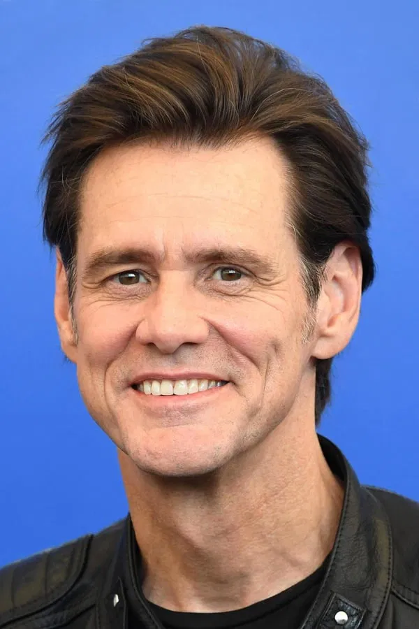

|  | Birth name | - James Eugene Carrey |
| Born | - January 17, 1962 (age 59) | |
| Place of birth | - Newmarket, Ontario, Canada | |
| Occupation | - Actor, comedian, writer, artist | |
| Years active | - 1977–present | |
| Spouse(s) | - Melissa Womer (m. 1987; div. 1995) Lauren Holly (m. 1996; div. 1997) |
James Eugene Carrey (born January 17, 1962) is a Canadian-American actor, comedian, writer, and artist. Known for his energetic slapstick performances, Carrey first gained recognition in 1990, after landing a recurring role in the American sketch comedy television series In Living Color (1990–1994). He broke out as star in motion pictures with Ace Ventura: Pet Detective, The Mask and Dumb and Dumber (all 1994). This was followed up with Ace Ventura: When Nature Calls, Batman Forever (both 1995), and Liar Liar (1997). In the 2000s, he gained further notice for his portrayal of the Grinch in How the Grinch Stole Christmas and for the comedy Me, Myself & Irene (both 2000). In the 2000s, he gained further notice for his portrayal of the Grinch in How the Grinch Stole Christmas and for the comedy Me, Myself & Irene (both 2000). In the 2000s, he gained further notice for his portrayal of the Grinch in How the Grinch Stole Christmas and for the comedy Me, Myself & Irene (both 2000).
Carrey has donated to various charitable organizations, including Comic Relief, Inc., the Elizabeth Glaser Pediatric AIDS Foundation, and the Intrepid Fallen Heroes Fund. In 2013, Carrey announced his support for the Better U Foundation, which aims to inspire, engage, and energize young people to participate in social change. In 2017, Carrey donated a portrait to the David Lynch Foundation, which was auctioned on eBay to support the foundation's initiative to teach one million at-risk children to meditate.
Carrey has described himself as a "simple guy" and does not live a lavish lifestyle. He is known for his energetic slapstick performances. Carrey has been praised for his performances in a variety of roles. In a review of Liar Liar, The New York Times called him "the most successful comedy star of the 1990s". Carrey has been nominated for various awards for his work, including winning a Golden Globe Award for Best Actor for his performance in The Truman Show. He has also been nominated for six Primetime Emmy Awards, winning in 1996 and 2014.